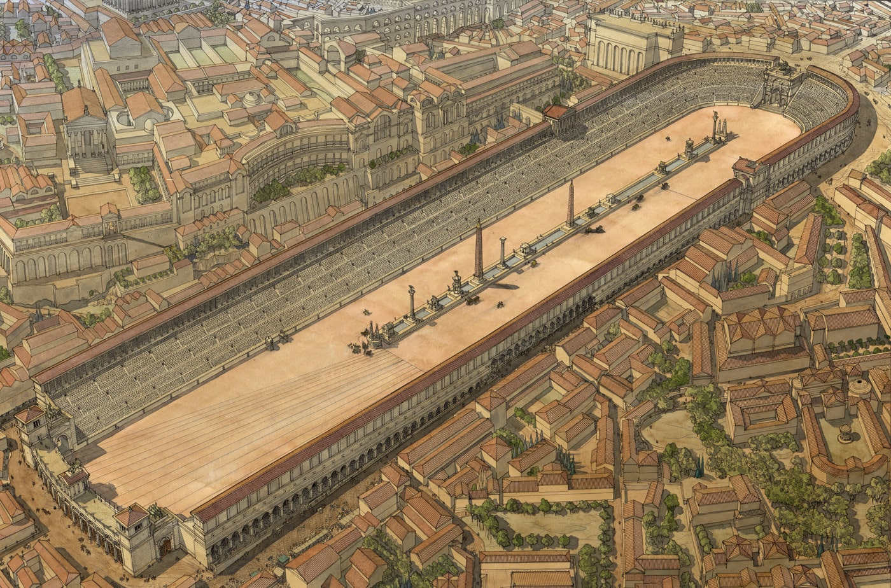

The Circus Maximus was the first and largest chariot-racing stadium in ancient Rome, situated in the valley between the Aventine and Palatine hills. Roman circuses were the most important centres of entertainment in the Roman cities, apart from the theatres and amphitheatres. They were extended precincts in which the public games were held, consisting of chariot races and different spectacles.
At its largest during the 1st century CE following its rebuilding after the fire of 64 CE, the Circus had a capacity for 250,000 spectators seated on banks 30 m wide and 28 m high. Seats were in concrete and stone in the lower two tiers and wood for the rest. The seats at the closed curved end date from the early 1st century CE. The outside of the circus presented an impressive front of arcades in which shops would have served the needs of the spectators.
Currently, the ruins of what was once the Circus Maximus barely remain. There is only the enormous terrace that keeps the form that it had in its day, which often causes disappointment for tourists who visit it hoping to find at least the ruins of the precinct.
Information found in Civitatis Rome and World History.org
Images found in Romesite and Colosseum Rome Tickets